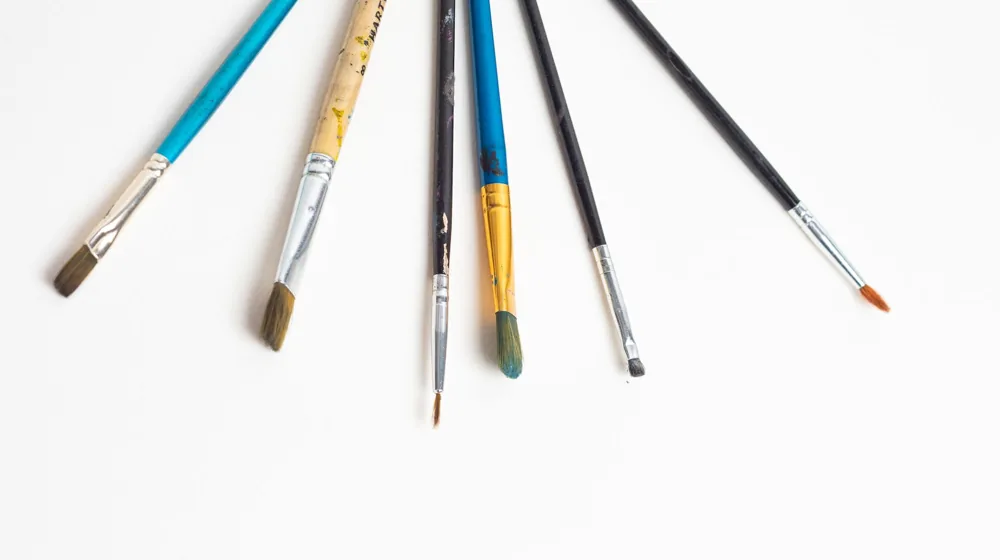
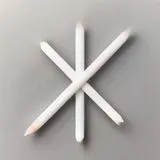

첫 공예 시작, 비용 부담 없이 실력 키우는 입문 브랜드 5가지
사진: Ravi Kant / Pexels (무료 이미지, 출처 표기)
새로운 공예 작품, 재료비 걱정 없이 시작하고 싶다면?

공예에 입문하려는 많은 분들이 가장 먼저 부딪히는 장벽은 바로 '재료비'입니다. 좋은 작품을 만들고 싶지만, 고가의 재료와 도구 때문에 시작조차 망설이는 경우가 많습니다. 이 글은 신진 공예 작가들이 비용 부담 없이 작품 활동을 시작하고, 실력을 키워나갈 수 있도록 돕는 실용적인 가이드입니다.
재료비 걱정 없이 공예를 시작할 수 있는 가성비 브랜드 및 구매처를 알아보고, 초보 작가가 꼭 알아야 할 선택 기준과 현명한 구매 팁을 2026년 8월 기준으로 정리했습니다. 지금부터 당신의 잠재력을 마음껏 펼쳐보세요.
신진 공예 작가가 가성비 브랜드를 찾는 이유
초보 작가에게 가성비 브랜드는 단순한 비용 절감 이상의 의미를 가집니다. 첫째, 초기 투자 비용을 낮춰 다양한 공예 분야를 시도할 기회를 제공합니다. 어떤 공예가 자신에게 맞을지 모르는 상태에서 고가 재료에 투자하는 것은 부담이 될 수 있기 때문입니다.
둘째, 실패에 대한 부담을 줄여줍니다. 공예는 시행착오의 연속인데, 저렴한 재료는 연습 과정에서의 실패를 심리적으로 덜어줍니다. 셋째, 작품 활동의 지속 가능성을 높여줍니다. 꾸준히 작품을 만들려면 재료 수급이 원활하고 경제적이어야 합니다.
초보 작가를 위한 공예 재료 및 도구 선택 기준
가성비만 쫓다 보면 품질이나 안전성을 놓칠 수 있습니다. 다음 5가지 기준을 참고하여 현명하게 재료를 선택하세요.
- 접근성: 오프라인 문구점이나 대형 마트, 혹은 온라인 쇼핑몰에서 쉽게 구할 수 있는 제품인지 확인합니다.
- 안전성: 특히 피부에 닿거나 호흡기에 영향을 줄 수 있는 재료는 KC 인증 등 안전 기준을 통과했는지 확인하는 것이 중요합니다.
- 범용성: 한 가지 재료로 여러 가지 기법이나 다양한 종류의 작품을 만들 수 있다면 더욱 효율적입니다.
- 가격 합리성: 같은 종류의 재료라도 용량 대비 가격, 세트 구성 등을 비교하여 합리적인 가격대를 선택합니다.
- 정보 공유 용이성: 유튜브 튜토리얼이나 공예 커뮤니티에서 해당 재료의 활용 팁, 후기 등이 많은 제품은 초보자에게 큰 도움이 됩니다.
2026년 8월 기준, 가성비 입문 공예 브랜드/유형 추천 5가지
다양한 공예 분야에서 초보자가 접근하기 좋은 가성비 브랜드 또는 구매처 유형을 소개합니다. 특정 제품명보다는 폭넓은 선택지를 제시하여 개인의 취향에 맞게 활용할 수 있도록 했습니다. 정확한 가격과 재고는 판매처에서 확인하는 것이 좋습니다.
초보 작가가 놓치지 말아야 할 재료 구매 팁
재료 구매 시 몇 가지 팁을 활용하면 불필요한 지출을 줄이고 더 효율적인 소비를 할 수 있습니다.
첫째, '세트'보다는 꼭 필요한 것부터 소량 구매하세요. 처음에는 기본적인 도구와 최소한의 재료만으로 시작하고, 작품을 만들면서 필요한 것을 추가하는 것이 좋습니다. 세트 상품은 불필요한 구성품 때문에 낭비가 생길 수 있습니다.
둘째, 온라인과 오프라인 가격을 비교하세요. 온라인은 더 다양한 선택지와 저렴한 가격을 제공할 수 있지만, 배송비가 붙을 수 있습니다. 오프라인 매장은 직접 재료를 보고 구매할 수 있는 장점이 있습니다.
셋째, 공예 커뮤니티나 중고 거래 플랫폼을 활용하는 것도 좋은 방법입니다. 다른 작가들이 사용하다 남은 재료나 상태 좋은 중고 도구를 저렴하게 구할 수 있으며, 공동 구매 기회를 통해 할인 혜택을 받을 수도 있습니다.
초보 공예 작가를 위한 추가 조언
가성비 재료로 시작하더라도 꾸준히 즐기기 위해서는 몇 가지 조언이 필요합니다. 먼저, 너무 큰 목표보다는 작은 프로젝트부터 시작하여 성취감을 느끼는 것이 중요합니다. 작은 소품이나 연습용 작품을 완성하며 자신감을 얻으세요.
다양한 재료와 기법을 시도하며 자신에게 맞는 공예 분야를 찾아보는 것도 좋습니다. 무료 온라인 강의나 유튜브 튜토리얼을 적극적으로 활용하면 별도의 수강료 없이도 많은 것을 배울 수 있습니다. 마지막으로, 다른 작가들과 소통하며 영감을 얻고 정보를 교환하는 활동은 작품 활동에 큰 활력이 됩니다. 이 글에서 제시된 정보는 2026년 8월 기준이며, 정확한 사항은 각 브랜드나 판매처의 공식 웹사이트에서 다시 확인하시길 권장합니다.
🔗 이 글도 함께 보면 좋아요: 전통 공예품, 우리 집 인테리어에 '힙'하게 들이는 5가지 방법
관련 추천 상품
공예 재료 세트, 초보 공예 키트, 미술 용품, 뜨개실 관련 인기 상품 보러가기
이 포스팅은 쿠팡 파트너스 활동의 일환으로, 이에 따른 일정액의 수수료를 제공받습니다.
한눈에 보는 상품 목록

신한/문교 아크릴 물감
다양한 색상과 용량으로 제공되며, 초보자도 쉽게 사용할 수 있는 대중적인 미술 재료입니다.
아이클레이 세트
안전하고 부드러워 아이들도 쉽게 조형 활동을 할 수 있으며, 건조 후 굳어지는 점토 세트입니다.
DIY 뜨개 키트
실, 바늘, 도안 등이 모두 포함되어 있어 처음 뜨개를 시작하는 사람도 쉽게 작품을 완성할 수 있습니다.
레진아트 입문 세트
레진 원액과 몰드, 경화제, 색소 등 레진 공예를 시작하는 데 필요한 기본 재료들로 구성된 키트입니다.
가죽공예 초보 키트
재단된 가죽과 필요한 도구들이 포함되어 있어, 기본적인 가죽 소품을 직접 만들어 볼 수 있는 키트입니다.